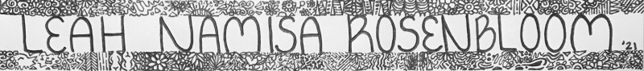

Projects
Abolition Technology Resource Project
A growing collection of resources at the intersections of abolition, technology, and education.
Re-Imagining Cryptography and Privacy (ReCAP) Workshop
An intentional space to explore the ways in which cryptography and privacy technology production can reinforce systems of oppression, and how we—a transdisciplinary community of scholars and activists—might solidfy approaches, ideas, and designs that center marginalized voices, resist toxic aspects of technology production, and leverage cryptography and privacy tools toward dismantling those systems.
Community-Driven Cryptography Project
A project dedicated to understanding and addressing the specific security and privacy needs of marginalized communities.
Surveillance Diaries Project (Placeholder)
A space to document the lived experiences of people under surveillance. In the meantime, check out a blog post about my experiences with surveillance as a high school student.
Technology for Grassroots Organizing Resource Project (Placeholder)
A placeholder for a list of digital technologies for grassroots organizing. In the meantime, check out the EFF's Surveillance Self-Defense Guides and some preliminary resources included in my Cryptography for Grassroots Organizing talk.
